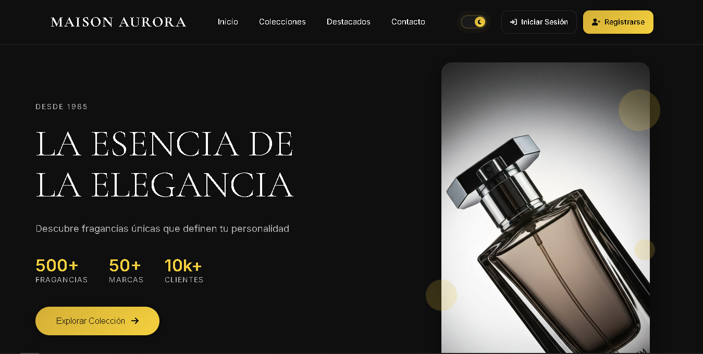
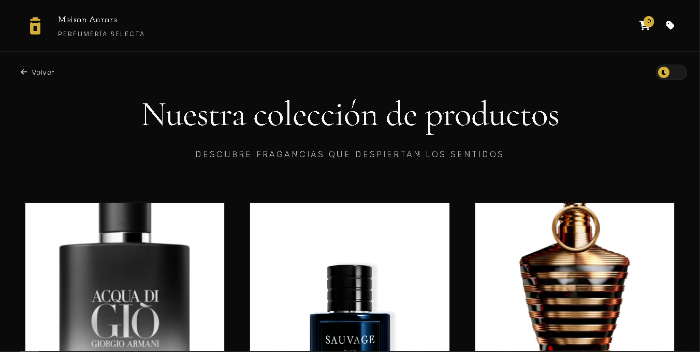
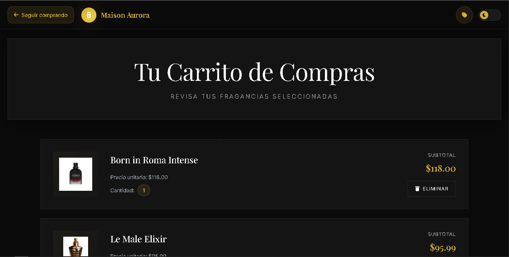
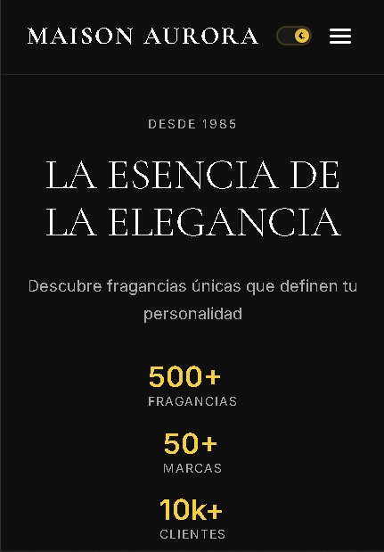
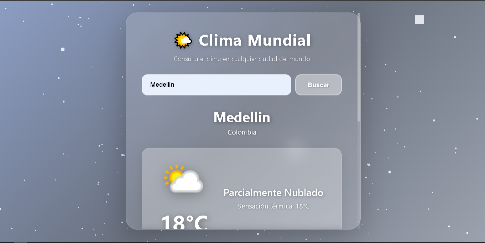
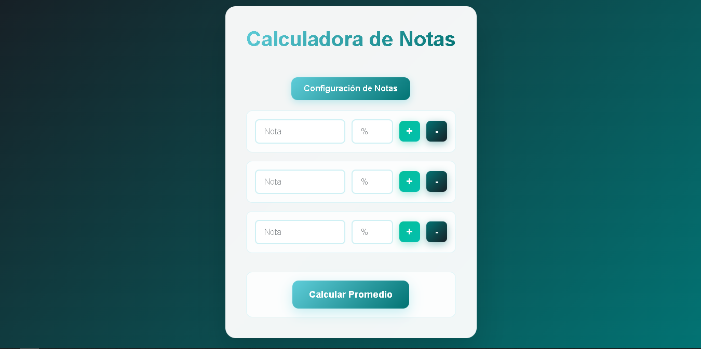

Oliver ⚡💻
Construir proyectos reales es la mejor forma de aprender. Estos tres proyectos representan hitos importantes en mi desarrollo como programador, cada uno enfocado en resolver problemas específicos y dominar diferentes tecnologías.
A lo largo de mi aprendizaje, he descubierto que la teoría sin práctica no tiene sentido. Por eso decidí crear proyectos completos que pudiera mostrar en mi portafolio y que realmente demostraran mis habilidades.
En este artículo comparto tres proyectos que construí desde cero, los desafíos que enfrenté, las soluciones que implementé y las lecciones que aprendí en el proceso. Todos los proyectos están disponibles en mi GitHub para que puedas explorarlos y aprender de ellos.
Sigue leyendo y descubre cómo estos proyectos me ayudaron a mejorar mis habilidades.
Los Tres Proyectos
1. Tienda Online Responsiva
Una tienda en línea completa y responsiva construida con HTML, CSS y JavaScript. Este proyecto me permitió practicar diseño de interfaces, manejo de carrito de compras y responsividad en diferentes dispositivos.
La tienda incluye una página principal con productos, sistema de filtrado, carrito de compras funcional con localStorage, y un diseño completamente adaptable a móviles, tablets y escritorio.




El mayor desafío fue implementar la funcionalidad del carrito de compras que persistiera incluso después de cerrar el navegador. Utilicé localStorage para almacenar los datos y JavaScript para manejar todas las operaciones de agregar, eliminar y actualizar cantidades.
Este proyecto me ayudó a entender mejor la manipulación del DOM, eventos de JavaScript y cómo estructurar código JavaScript de manera organizada y mantenible.
⚡ Tecnologías Utilizadas
- HTML5 semántico
- CSS3 con Flexbox y Grid
- JavaScript ES6+
- LocalStorage API
- Diseño Mobile-First
Una de las mejores decisiones fue trabajar con un enfoque mobile-first. Comencé diseñando para móviles y luego escalé a pantallas más grandes, lo que hizo que el CSS fuera más limpio y fácil de mantener.
También implementé un sistema de notificaciones cuando se agregan productos al carrito, transiciones suaves entre secciones y feedback visual en todos los botones interactivos.
2. Aplicación del Clima
Una aplicación del clima interactiva que utiliza la API de OpenWeatherMap para mostrar información meteorológica en tiempo real. Este proyecto me permitió practicar el consumo de APIs, manejo de datos asíncronos y creación de interfaces dinámicas.
La aplicación permite a los usuarios buscar el clima de cualquier ciudad del mundo, mostrando temperatura actual, descripción del clima, humedad, velocidad del viento y un ícono representativo de las condiciones meteorológicas.
Características Principales

Ver Weather App en GitHub — Este proyecto me enseñó a trabajar con APIs REST, promesas y async/await.
El mayor desafío fue manejar los diferentes estados de la aplicación: cargando, éxito, error cuando la ciudad no existe, y problemas de conexión. Implementé mensajes de error claros y loaders para mejorar la experiencia del usuario.
También aprendí sobre seguridad de APIs. Inicialmente tenía mi API key directamente en el código, pero después investigué sobre variables de entorno y mejores prácticas para proteger información sensible.
Aquí un ejemplo de cómo estructuré el código para obtener los datos:
/* Estructura de la petición:
1. Usuario ingresa nombre de ciudad
2. Validar que el campo no esté vacío
3. Mostrar loader mientras se obtienen datos
4. Hacer petición fetch() a la API
5. Manejar respuesta con async/await
6. Si hay error → mostrar mensaje
7. Si es exitoso → actualizar interfaz con datos
8. Mostrar temperatura, descripción e ícono
*/⚡ Aprendizajes Clave
- Consumo de APIs REST con Fetch
- Manejo de Promesas y async/await
- Gestión de estados (loading, error, success)
- Validación de datos del usuario
- Manejo de errores y feedback visual
Este proyecto fue un gran paso en mi comprensión de JavaScript asíncrono y me preparó para trabajar con APIs más complejas en proyectos futuros.
3. Calculadora de Notas Académicas
Una aplicación web práctica para calcular promedios de notas y determinar si un estudiante aprueba o reprueba. Construida con HTML, CSS y JavaScript, este proyecto me ayudó a practicar lógica de programación y validación de datos.
La calculadora permite ingresar múltiples notas, calcula automáticamente el promedio, determina el estado (aprobado/reprobado) según un umbral definido, y muestra los resultados de manera clara y visual.
Interfaz y Funcionalidad

Ver Calculadora de Notas en GitHub — Este proyecto me permitió practicar operaciones matemáticas y validaciones en JavaScript.
Lo interesante de este proyecto fue implementar validaciones robustas. Tuve que asegurarme de que los usuarios solo pudieran ingresar números válidos, manejar casos como campos vacíos, y prevenir errores de división por cero.
⚡ Funcionalidades Principales
- Agregar múltiples notas dinámicamente
- Validación de datos numéricos
- Cálculo automático de promedio
- Determinación de estado (aprobado/reprobado)
- Eliminar notas individuales
- Reiniciar calculadora
- Feedback visual con colores
Una característica que agregué fue el cambio de color del resultado según el estado: verde para aprobado y rojo para reprobado. Estos pequeños detalles visuales mejoran significativamente la experiencia del usuario.
También implementé la capacidad de agregar y eliminar notas de forma dinámica, lo que implicó trabajar con arrays, métodos como push(), splice() y map(), y actualizar el DOM en tiempo real.
Este proyecto, aunque simple en su concepto, me ayudó a entender mejor cómo estructurar aplicaciones interactivas y manejar el flujo de datos entre la interfaz y la lógica de JavaScript.
🚀 #TipDesarrollo
Cuando construyas proyectos, siempre piensa en la experiencia del usuario.
Validaciones, mensajes de error claros y feedback visual hacen la diferencia entre un proyecto amateur y uno profesional.
Conclusiones
Hoy conociste tres proyectos reales que construí para fortalecer mis habilidades como desarrollador web. Cada uno representa un desafío diferente y utiliza tecnologías fundamentales:
- Tienda Online - Diseño responsivo y manejo de estado con localStorage
- Weather App - Consumo de APIs y manejo de datos asíncronos
- Calculadora de Notas - Lógica de programación y validaciones
Si construyes estos proyectos (o tus propias versiones), saldrás del proceso con un conocimiento sólido de HTML, CSS, JavaScript, APIs REST, manejo de datos asíncronos y buenas prácticas de desarrollo front-end.
Si parece abrumador, no te estreses. Todos comenzamos desde cero. Toma un proyecto a la vez, resuelve un problema a la vez, y verás cómo todo empieza a tener sentido. Como dicen, ¡el mejor momento para empezar es ahora!
Todos estos proyectos están disponibles en mi GitHub para que puedas explorar el código, aprender de él y adaptarlo a tus propias ideas. Siéntete libre de hacer preguntas o compartir tus comentarios. ¡Buena suerte y diviértete programando! 💪